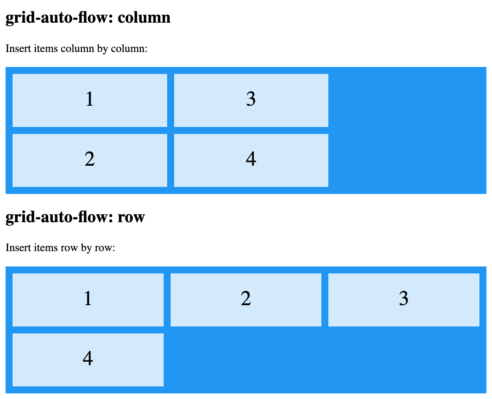
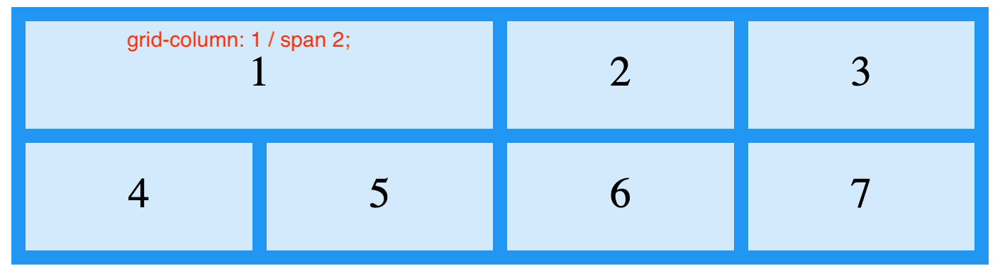
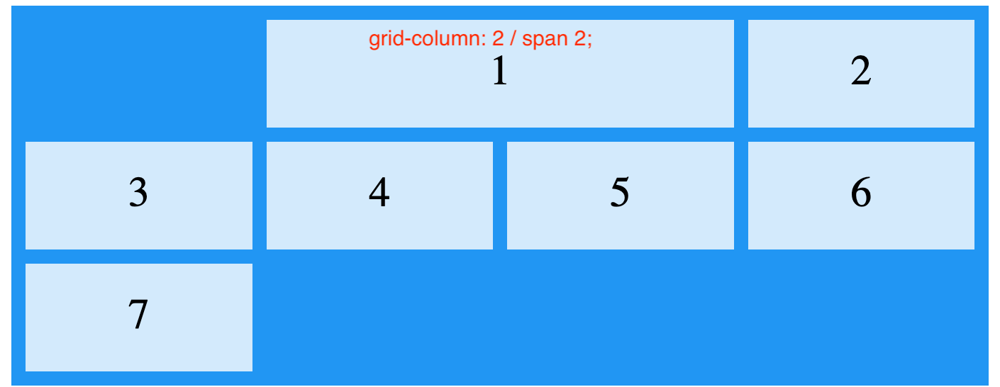
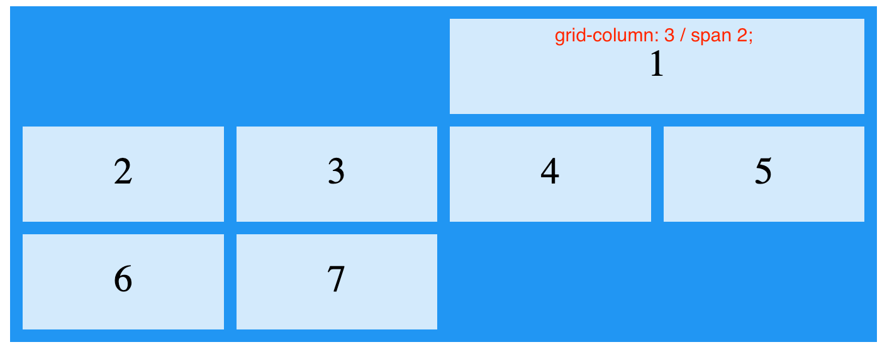
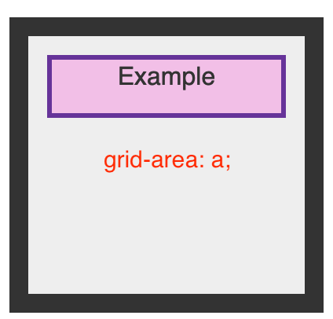
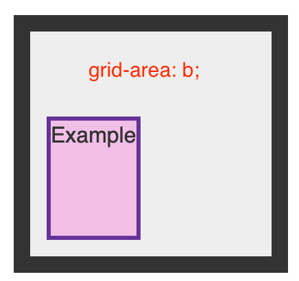
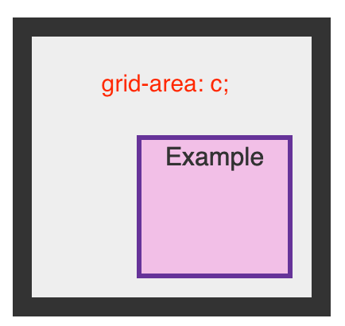
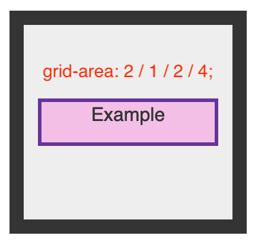

Overall
CSS Grid Layout
Auto-placement in CSS Grid Layout
Basic Concepts of Grid Layout
Box Alignment in CSS Grid Layout
CSS Grid and Progressive Enhancement
CSS Grid Layout and Accessibility
CSS Grid Logical Values and Writing Modes
Grid Template Areas
Layout using Named Grid Lines
Line-based Placement with CSS Grid
Masonry Layout
Realizing common layouts using CSS Grid Layout
Relationship of Grid Layout
Subgrid
flex value
grid
is the shorthand of:
grid-area
grid-auto-columns: lengt || percentage || flex || minmax() || fit-content() || multiple track-size
grid-auto-rows
grid-auto-flow: row || column || dense || row dense || column dense
grid-template: none || grid-template-rows / grid-template-columns || grid-template-areas || initial || inherit;
grid-template-areas
grid-column: grid-column-start / grid-column-end;
grid-row: grid-row-start / grid-row-end
grid-template-columns
grid-template-rows
minmax()
can be used in
grid-template-columns
grid-template-rows
grid-auto-columns
grid-auto-rows
repeat()
:repeat(number of columns/rows, the column width we want)
fit-content()
gap
column-gap
row-gap
gird
grid-auto-columns(length of width) || grid-auto-rows(length of height)
grid-auto-flow

1
2
3
4
5
column
row
dense
Grid Layout #1
grid-column (左右)： grid-column-start(起点) / grid-column-end(终点)
grid-row (上下)：grid-row-start(起点) / grid-row-end(终点)
  
Grid Layout #2
grid-column: 1 / 3; /*左右：从第一个格到大二个格*/
grid-row: 1; /*上下：第一个格*/
grid-column: 2 / 4; /*从第二个格到大三个格*/
grid-row: 1 / 3; /*从第一到第二个格*/
grid-column: 1;
grid-row: 2 / 5;
grid-column: 3;
grid-row: 3;
grid-column: 2;
grid-row: 4;
grid-column: 3;
grid-row: 4;
grid-template:
shorthand of
grid-template-areas
grid-template-columns
grid-template-rows
Header
Navigation
Main area
grid-area
   
minmax()
grid-template-columns: minmax(min-content, 300px) minmax(200px, 1fr) 150px;
repeat()
repeat(4, [col-start] min-content [col-middle] max-content [col-end])